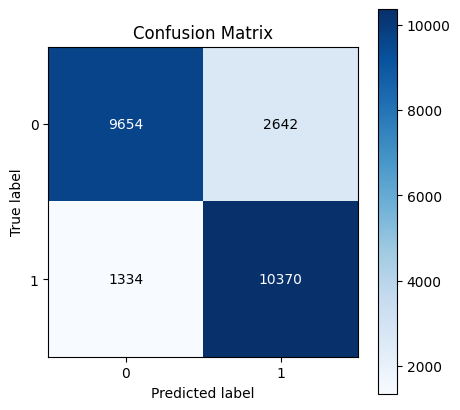
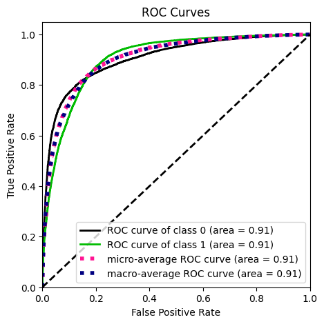
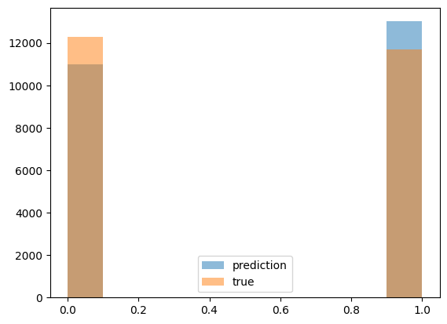
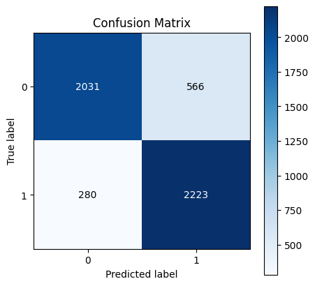
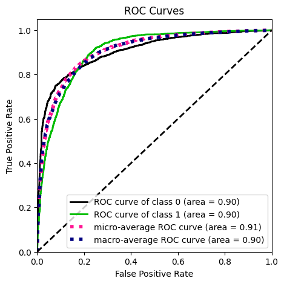
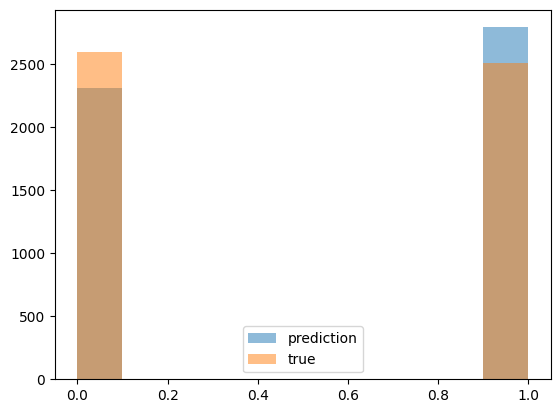
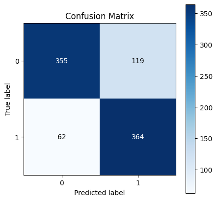
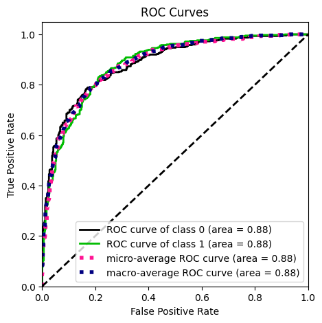
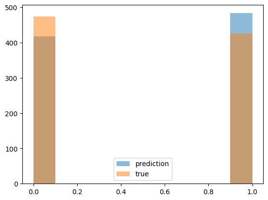

def write_yaml_file(file_path: str, file_name: str, dictionary: dict):
with open(Path(file_path, file_name), 'w') as f:
yaml.dump(dictionary, f)
models_dict = dict({
'preprocessors_adls_path' : 'preprocessors/',
'modeling_adls_path' : 'modeling/',
'predictions_adls_path': 'predictions/',
'connection_str': 'DATALAKE_CONN_STR_SECRET',
'sas_token' : 'DATALAKE_SAS_TOKEN_SECRET',
'hold_out_table' : 'LTBP_HOLDOUT_TEST_MODEL_RESULTS',
'tracking_table' : 'LTBP_MODEL_TRACKING_FY23',
'identification': ['ECID', 'SEASONYEAR'],
'inference_sf_table_name': 'LTBP_PREDICTIONS_FY23',
'BASELINE': {
'description': 'Standard baseline xgb_hyperopt approach status quo of LTBP of the past',
'model_trainer': 'train_xgb',
'y_preprocess_object_name': None,
'y_scaler_type' : None,
'x_preprocess_object_name': 'standard_pipe.pickle',
'hyperopt_evals' : 2,
'hyper_opt_subsample_size': 2750000,
'training_subsample_size' : 5000000,
},
'NOHYPEROPT': {
'description': 'Only here to see if it works delete at some point xgb_fit_only',
'model_trainer': 'train_xgb_basic',
'y_preprocess_object_name': None,
'y_scaler_type' : None,
'x_preprocess_object_name': 'standard_pipe.pickle',
'hyper_opt_subsample_size' : '',
'hyperopt_evals' : '',
'training_subsample_size' : 5000000,
}
})
write_yaml_file('./LTBP/files/yaml_files/', 'models.yaml', models_dict)Modeling Script
Models Available For This Project
Script
This is the DSDE standard process for using Xboost with hyperopt
model_train
model_train (yaml_file_list:list<YAMLfilestoread>, experiment_name:str<YAMLsectiontoread>, experiment:<YAMLsectiontoread>, test_set:<CreateaTestSetFromTrainingData>, sfSchema:str<devq ueriesdevschemaanythingelsewillqueryprojectschema>)
| Type | Details | |
|---|---|---|
| yaml_file_list | list |
noqa: |
| experiment_name | str |
noqa: |
| experiment | noqa: | |
| test_set | noqa: | |
| sfSchema | str |
noqa: |
Local Development Code
Here is where the development of the script can be improved this code should run sequentially happy coding
yaml_file_list=['features.yaml', 'udf_inputs.yaml','etl.yaml','models.yaml']
prod_or_dev = 'dev'
experiment_name='BASELINE'
experiment = True # this will trigger if the feature set needs to be created
test_set = True
# Grab all yaml files for current probject
features, udf_inputs, etl_dict, models_dict = get_yaml_dicts(yaml_file_list)
# Create Snowflake Stage and Query Experiment location or commit location and return training data
sf = snowflake_query(sfSchema=prod_or_dev if prod_or_dev.lower() == 'dev' else 'LTBP')
df = create_stage_and_query_stage_sf(
sf=sf,
etl=etl_dict,
udf_inputs=udf_inputs,
train_or_inference='TRAINING',
experiment_name=experiment_name,
experiment=experiment,
indentification=models_dict['identification']
)
# Choosing an adls path depending on experiment being true or false
adls_path = os.path.join(
(os.path.join(etl_dict['data_lake_path'], 'experiments', experiment_name)
if experiment
else os.path.join(
etl_dict['data_lake_path'],
os.environ.get('CI_COMMIT_SHA', 'LocalRunNBS'))
)
, models_dict['preprocessors_adls_path']
, models_dict['BASELINE']['model_trainer'])
# Grab all Categorical and Continous Variables for Modeling
cat_vars = [{f.upper(): values['transformation'][experiment_name]} for f, values in features.items()
if values['var_type'][experiment_name] == 'cat'
and values['input_definition'] != 'LABEL']
cont_vars = [{f.upper(): values['transformation'][experiment_name]} for f, values in features.items()
if values['var_type'][experiment_name] == 'cont'
and values['input_definition'] != 'LABEL']
y_var = [k.upper() for k, v in features.items() if v['input_definition'] == 'LABEL']
# Create Dictionary and create sklearn preprocessing Pipeline
feature_dict = create_sklearn_preprocess_baseline_dict(cat_vars=cat_vars,
cont_vars=cont_vars)
logging.info(feature_dict)
cat_vars = return_list_of_vars(cat_vars)
cont_vars = return_list_of_vars(cont_vars)
logging.info(f"categorical variables: \n {cat_vars}")
logging.info(f"continous variables: \n {cont_vars}")
pipe = preprocessing.generate_sklearn_preprocessing_pipeline(
feature_dict, impute=True, impute_strategy='mean'
)
# Preprocess and split data set to return neccessary object for modeling
result = prepare_training_set(df,
y_var=[k.upper() for k, v in features.items() if v['input_definition'] == 'LABEL'],
y_scaler_type=models_dict[experiment_name]['y_scaler_type'],
adls_path=adls_path,
sklearn_pipe=pipe,
test_set=test_set,
etl_dict=etl_dict,
models_dict=models_dict,
connection_str=os.environ[models_dict["connection_str"]],
experiment_name=experiment_name,
as_type=int,
identifiers=['ECID', 'SEASONYEAR']
)
if test_set:
X_train, X_valid, X_test, y_train, y_valid, y_test, sklearn_pipe, scaler, id_list = result
else:
X_train, X_valid, y_train, y_valid, sklearn_pipe, scaler, id_list = result
# Choosing model from models.py to use from models.yaml file
model_trainer = getattr(ds_models, models_dict[experiment_name]['model_trainer'])
model = model_trainer(X_train,
X_valid,
y_train,
y_valid,
evals=models_dict[experiment_name]['hyperopt_evals'],
sub=models_dict[experiment_name]['hyper_opt_subsample_size'],
train=models_dict[experiment_name]['training_subsample_size'])
"""
Custom needs for each project type this works for a binary classification
this is not my best work, but trying to put something together
this is dry I am sure i could make this just a few lines
"""
result_dict = {}
logging.info('Training Set Evaluation')
eval_list_train = evaluate(model, X_train, y_train, y_var, feature_importance=True, plot=True)
metric1, metric2, metric3, columns, _, _, fi_permutation = eval_list_train
result_dict['training_metrics'] = {k: v for k, v in zip(columns, [metric1]+[metric2]+[metric3])}
result_dict['fi_train'] = {k: v for k, v in fi_permutation[:10].values}
logging.info('Validation Set Evaluation')
eval_list_valid = evaluate(model, X_valid, y_valid, y_var, feature_importance=True, plot=True)
metric1, metric2, metric3, columns, y_pred_proba, y_pred, fi_permutation = eval_list_valid
result_dict['valid_metrics'] = {k: v for k, v in zip(columns, [metric1]+[metric2]+[metric3])}
result_dict['fi_valid'] = {k: v for k, v in fi_permutation[:10].values}
if X_test is not None:
logging.info('Test Set Evaluation')
eval_list_test = evaluate(model, X_test, y_test, y_var, feature_importance=True, plot=True)
metric1, metric2, metric3, columns, y_pred_proba, y_pred, fi_permutation = eval_list_test
result_dict['test_metrics'] = {k: v for k, v in zip(columns, [metric1]+[metric2]+[metric3])}
result_dict['fi_test'] = {k: v for k, v in fi_permutation[:10].values}
sf = snowflake_query(sfSchema='LTBP')
send_holdout_results_to_sf(sf=sf,
id_list=id_list,
probs=y_pred_proba,
experiment=experiment,
experiment_name=experiment_name,
etl_dict=etl_dict,
model_dict=models_dict)
adls_path = os.path.join(
(os.path.join(etl_dict['data_lake_path'], 'experiments', experiment_name)
if experiment else os.path.join(
etl_dict['data_lake_path'], os.environ.get('CI_COMMIT_SHA', 'LocalRunNBS'))
)
)
custom_project_log = [
{
'action_description': models_dict[experiment_name]["description"],
'transaction_type': "model_training",
'commitid': os.getenv("CI_COMMIT_SHA", 'LocalRunNBS'),
'environment': os.getenv("prod_or_dev", None),
'branch': os.getenv("CI_COMMIT_REF_SLUG", None),
'timestamp': datetime.datetime.now(pytz.timezone("US/Mountain")).strftime('%Y-%m-%d %H:%M:%S'),
'artifacts': json.dumps({"azure_parent_folder": adls_path}),
'metrics': json.dumps(result_dict),
'experiment_name' : experiment_name,
'experiment' : experiment,
'production_model' : False,
'ever_production' : False,
}
]
project_log_df = project_log.project_log(
snowflake_connection=sf,
table_name=models_dict['tracking_table'],
custom_schema=custom_project_log,
append_or_replace="append",
)
logging.info(f'project log preview:\n{project_log_df}')
logging.info(f'project log values preview:\n{project_log_df.loc[0].values}')
# Saving sklearn pipeline to adls
logging.info('Saving model and sending it to adls')
full_pipeline = Pipeline([('preprocessing', pipe), ('classification', model)])
adls_path = os.path.join(adls_path
, models_dict['modeling_adls_path']
, models_dict['BASELINE']['model_trainer'])
save_sklearn_object_to_data_lake(
save_object=full_pipeline,
adls_path=adls_path,
file_name=(models_dict[experiment_name]['model_trainer']+
os.environ.get('CI_COMMIT_SHA', 'LocalRunNBS')+
experiment_name+'.pkl'
),
container_name=etl_dict['azure_container'],
connection_str=os.environ[models_dict['connection_str']]
)INFO:data_system_utilities.snowflake.utils:stage_query:
create or replace stage ltbpFY23LocalRunTest
url='azure://vaildtscadls.blob.core.windows.net/vailadls/projects/LTBP/FY23/experiments/BASELINE'
credentials=(azure_sas_token='**MASKED**')
encryption=(type= 'NONE')
file_format = (type = parquet )
INFO:data_system_utilities.snowflake.utils:connection to snowflake established...
INFO:data_system_utilities.snowflake.query:executing query
INFO:data_system_utilities.snowflake.query:data loaded from snowflake
INFO:data_system_utilities.snowflake.query:connection to snowflake has been turned off
INFO:data_system_utilities.snowflake.query:Stage area LTBPFY23LOCALRUNTEST successfully created.
INFO:root:adls snowflake stage query
select
$1:"ECID"::varchar as ECID
, $1:"SEASONYEAR"::varchar as SEASONYEAR
, $1:"AGE"::varchar as AGE
, $1:"AVGVISITPERSEASON"::varchar as AVGVISITPERSEASON
, $1:"BOUGHTPASS"::varchar as BOUGHTPASS
, $1:"DESTINATIONGEOAFINITYLABEL"::varchar as DESTINATIONGEOAFINITYLABEL
, $1:"EVERCOREPASS"::varchar as EVERCOREPASS
, $1:"EVERPASS"::varchar as EVERPASS
, $1:"GENDERCODE"::varchar as GENDERCODE
, $1:"GUESTBEHAVIOR"::varchar as GUESTBEHAVIOR
, $1:"ISEPICMIXACTIVATED"::varchar as ISEPICMIXACTIVATED
, $1:"MARKETINGZONE"::varchar as MARKETINGZONE
, $1:"MOSTCOMMONTICKETCOMP"::varchar as MOSTCOMMONTICKETCOMP
, $1:"MOSTSUBSEASONVISITED"::varchar as MOSTSUBSEASONVISITED
, $1:"MOSTVISITEDREGION"::varchar as MOSTVISITEDREGION
, $1:"MOSTVISITEDRESORT"::varchar as MOSTVISITEDRESORT
, $1:"ONLYSINGLERESORTKEY"::varchar as ONLYSINGLERESORTKEY
, $1:"PARTNERRESORTSCANNERFLAG"::varchar as PARTNERRESORTSCANNERFLAG
, $1:"RESORTSVISITED"::varchar as RESORTSVISITED
, $1:"SKIERABILITYLABEL"::varchar as SKIERABILITYLABEL
, $1:"SUBSEASONSPERYEAR"::varchar as SUBSEASONSPERYEAR
, $1:"TOTALSEASONSSCANNED"::varchar as TOTALSEASONSSCANNED
, $1:"TOTALVISITS"::varchar as TOTALVISITS
, $1:"VISITMOSTINPEAK"::varchar as VISITMOSTINPEAK
from @ltbpFY23LocalRunTest/training_data/
None
INFO:data_system_utilities.snowflake.utils:connection to snowflake established...
INFO:data_system_utilities.snowflake.query:executing query
INFO:data_system_utilities.snowflake.query:data loaded from snowflake
INFO:data_system_utilities.snowflake.query:connection to snowflake has been turned off
INFO:root:Preview dataframe queried ECID SEASONYEAR AGE AVGVISITPERSEASON BOUGHTPASS \
0 49436302 2018/19 11 1 0
1 80007527 2018/19 31 16.5 1
2 75608339 2018/19 47 2.5 0
3 27418903 2018/19 23 19 0
4 62624119 2018/19 38 9.5 1
DESTINATIONGEOAFINITYLABEL EVERCOREPASS EVERPASS GENDERCODE GUESTBEHAVIOR \
0 Destination 0 0 M PY Paid
1 Local 1 1 M PY Paid
2 Destination 0 0 F PY Paid
3 Local 1 1 M Prospect
4 Destination 1 1 M PY Paid
... MOSTVISITEDREGION MOSTVISITEDRESORT ONLYSINGLERESORTKEY \
0 ... Pacific Southwest 8 8
1 ... Rocky Mountain 3 None
2 ... Pacific Northwest 18 None
3 ... Rocky Mountain 15 None
4 ... Northeast 19 None
PARTNERRESORTSCANNERFLAG RESORTSVISITED SKIERABILITYLABEL SUBSEASONSPERYEAR \
0 0 1 None 1
1 0 2 Advanced 5.5
2 0 2 Intermediate 1
3 0 1 Advanced 7.5
4 0 2 None 2
TOTALSEASONSSCANNED TOTALVISITS VISITMOSTINPEAK
0 1 1 1
1 2 33 1
2 2 5 1
3 2 38 0
4 2 19 1
[5 rows x 24 columns]
INFO:root:{'DESTINATIONGEOAFINITYLABEL': {'transformation': {'name': 'OrdinalEncoder', 'args': {'handle_unknown': 'use_encoded_value', 'unknown_value': -1}}, 'variable_type': 'cat'}, 'EVERCOREPASS': {'transformation': {'name': 'OrdinalEncoder', 'args': {'handle_unknown': 'use_encoded_value', 'unknown_value': -1}}, 'variable_type': 'cat'}, 'EVERPASS': {'transformation': {'name': 'OrdinalEncoder', 'args': {'handle_unknown': 'use_encoded_value', 'unknown_value': -1}}, 'variable_type': 'cat'}, 'GENDERCODE': {'transformation': {'name': 'OrdinalEncoder', 'args': {'handle_unknown': 'use_encoded_value', 'unknown_value': -1}}, 'variable_type': 'cat'}, 'GUESTBEHAVIOR': {'transformation': {'name': 'OrdinalEncoder', 'args': {'handle_unknown': 'use_encoded_value', 'unknown_value': -1}}, 'variable_type': 'cat'}, 'ISEPICMIXACTIVATED': {'transformation': {'name': 'OrdinalEncoder', 'args': {'handle_unknown': 'use_encoded_value', 'unknown_value': -1}}, 'variable_type': 'cat'}, 'MARKETINGZONE': {'transformation': {'name': 'OrdinalEncoder', 'args': {'handle_unknown': 'use_encoded_value', 'unknown_value': -1}}, 'variable_type': 'cat'}, 'MOSTCOMMONTICKETCOMP': {'transformation': {'name': 'OrdinalEncoder', 'args': {'handle_unknown': 'use_encoded_value', 'unknown_value': -1}}, 'variable_type': 'cat'}, 'MOSTSUBSEASONVISITED': {'transformation': {'name': 'OrdinalEncoder', 'args': {'handle_unknown': 'use_encoded_value', 'unknown_value': -1}}, 'variable_type': 'cat'}, 'MOSTVISITEDREGION': {'transformation': {'name': 'OrdinalEncoder', 'args': {'handle_unknown': 'use_encoded_value', 'unknown_value': -1}}, 'variable_type': 'cat'}, 'MOSTVISITEDRESORT': {'transformation': {'name': 'OrdinalEncoder', 'args': {'handle_unknown': 'use_encoded_value', 'unknown_value': -1}}, 'variable_type': 'cat'}, 'ONLYSINGLERESORTKEY': {'transformation': {'name': 'OrdinalEncoder', 'args': {'handle_unknown': 'use_encoded_value', 'unknown_value': -1}}, 'variable_type': 'cat'}, 'PARTNERRESORTSCANNERFLAG': {'transformation': {'name': 'OrdinalEncoder', 'args': {'handle_unknown': 'use_encoded_value', 'unknown_value': -1}}, 'variable_type': 'cat'}, 'SKIERABILITYLABEL': {'transformation': {'name': 'OrdinalEncoder', 'args': {'handle_unknown': 'use_encoded_value', 'unknown_value': -1}}, 'variable_type': 'cat'}, 'TOTALSEASONSSCANNED': {'transformation': {'name': 'OrdinalEncoder', 'args': {'handle_unknown': 'use_encoded_value', 'unknown_value': -1}}, 'variable_type': 'cat'}, 'VISITMOSTINPEAK': {'transformation': {'name': 'OrdinalEncoder', 'args': {'handle_unknown': 'use_encoded_value', 'unknown_value': -1}}, 'variable_type': 'cat'}, 'AGE': {'transformation': {'name': 'StandardScaler', 'args': {}}, 'variable_type': 'cont'}, 'AVGVISITPERSEASON': {'transformation': {'name': 'StandardScaler', 'args': {}}, 'variable_type': 'cont'}, 'RESORTSVISITED': {'transformation': {'name': 'OrdinalEncoder', 'args': {'handle_unknown': 'use_encoded_value', 'unknown_value': -1}}, 'variable_type': 'cat'}, 'SUBSEASONSPERYEAR': {'transformation': {'name': 'StandardScaler', 'args': {}}, 'variable_type': 'cont'}, 'TOTALVISITS': {'transformation': {'name': 'StandardScaler', 'args': {}}, 'variable_type': 'cont'}}
INFO:root:categorical variables:
['DESTINATIONGEOAFINITYLABEL', 'EVERCOREPASS', 'EVERPASS', 'GENDERCODE', 'GUESTBEHAVIOR', 'ISEPICMIXACTIVATED', 'MARKETINGZONE', 'MOSTCOMMONTICKETCOMP', 'MOSTSUBSEASONVISITED', 'MOSTVISITEDREGION', 'MOSTVISITEDRESORT', 'ONLYSINGLERESORTKEY', 'PARTNERRESORTSCANNERFLAG', 'SKIERABILITYLABEL', 'TOTALSEASONSSCANNED', 'VISITMOSTINPEAK']
INFO:root:continous variables:
['AGE', 'AVGVISITPERSEASON', 'RESORTSVISITED', 'SUBSEASONSPERYEAR', 'TOTALVISITS']
INFO:machine_learning_utilities.preprocessing:Creating Sklearn Preprocessing Pipeline
INFO:machine_learning_utilities.preprocessing:Feature: DESTINATIONGEOAFINITYLABEL --> Transformer: OrdinalEncoder(handle_unknown='use_encoded_value', unknown_value=-1)INFO:machine_learning_utilities.preprocessing:Feature: EVERCOREPASS --> Transformer: OrdinalEncoder(handle_unknown='use_encoded_value', unknown_value=-1)
INFO:machine_learning_utilities.preprocessing:Feature: EVERPASS --> Transformer: OrdinalEncoder(handle_unknown='use_encoded_value', unknown_value=-1)
INFO:machine_learning_utilities.preprocessing:Feature: GENDERCODE --> Transformer: OrdinalEncoder(handle_unknown='use_encoded_value', unknown_value=-1)
INFO:machine_learning_utilities.preprocessing:Feature: GUESTBEHAVIOR --> Transformer: OrdinalEncoder(handle_unknown='use_encoded_value', unknown_value=-1)
INFO:machine_learning_utilities.preprocessing:Feature: ISEPICMIXACTIVATED --> Transformer: OrdinalEncoder(handle_unknown='use_encoded_value', unknown_value=-1)
INFO:machine_learning_utilities.preprocessing:Feature: MARKETINGZONE --> Transformer: OrdinalEncoder(handle_unknown='use_encoded_value', unknown_value=-1)
INFO:machine_learning_utilities.preprocessing:Feature: MOSTCOMMONTICKETCOMP --> Transformer: OrdinalEncoder(handle_unknown='use_encoded_value', unknown_value=-1)
INFO:machine_learning_utilities.preprocessing:Feature: MOSTSUBSEASONVISITED --> Transformer: OrdinalEncoder(handle_unknown='use_encoded_value', unknown_value=-1)
INFO:machine_learning_utilities.preprocessing:Feature: MOSTVISITEDREGION --> Transformer: OrdinalEncoder(handle_unknown='use_encoded_value', unknown_value=-1)
INFO:machine_learning_utilities.preprocessing:Feature: MOSTVISITEDRESORT --> Transformer: OrdinalEncoder(handle_unknown='use_encoded_value', unknown_value=-1)
INFO:machine_learning_utilities.preprocessing:Feature: ONLYSINGLERESORTKEY --> Transformer: OrdinalEncoder(handle_unknown='use_encoded_value', unknown_value=-1)
INFO:machine_learning_utilities.preprocessing:Feature: PARTNERRESORTSCANNERFLAG --> Transformer: OrdinalEncoder(handle_unknown='use_encoded_value', unknown_value=-1)
INFO:machine_learning_utilities.preprocessing:Feature: SKIERABILITYLABEL --> Transformer: OrdinalEncoder(handle_unknown='use_encoded_value', unknown_value=-1)
INFO:machine_learning_utilities.preprocessing:Feature: TOTALSEASONSSCANNED --> Transformer: OrdinalEncoder(handle_unknown='use_encoded_value', unknown_value=-1)
INFO:machine_learning_utilities.preprocessing:Feature: VISITMOSTINPEAK --> Transformer: OrdinalEncoder(handle_unknown='use_encoded_value', unknown_value=-1)
INFO:machine_learning_utilities.preprocessing:Feature: AGE --> Transformer: StandardScaler()
INFO:machine_learning_utilities.preprocessing:Feature: AVGVISITPERSEASON --> Transformer: StandardScaler()
INFO:machine_learning_utilities.preprocessing:Feature: RESORTSVISITED --> Transformer: OrdinalEncoder(handle_unknown='use_encoded_value', unknown_value=-1)
INFO:machine_learning_utilities.preprocessing:Feature: SUBSEASONSPERYEAR --> Transformer: StandardScaler()
INFO:machine_learning_utilities.preprocessing:Feature: TOTALVISITS --> Transformer: StandardScaler()
INFO:machine_learning_utilities.preprocessing:Imputing missing data with mean strategy
INFO:machine_learning_utilities.preprocessing:Preprocessing Pipeline Object:
Pipeline(steps=[('preprocessing',
FeatureUnion(transformer_list=[('pipeline-1',
Pipeline(steps=[('functiontransformer',
FunctionTransformer(func=<function get_cat_cols>,
kw_args={'cols': ['DESTINATIONGEOAFINITYLABEL']})),
('ordinalencoder',
OrdinalEncoder(handle_unknown='use_encoded_value',
unknown_value=-1))])),
('pipeline-2',
Pipeline(steps=[('...
FunctionTransformer(func=<function get_cont_cols>,
kw_args={'cols': ['SUBSEASONSPERYEAR']})),
('standardscaler',
StandardScaler())])),
('pipeline-21',
Pipeline(steps=[('functiontransformer',
FunctionTransformer(func=<function get_cont_cols>,
kw_args={'cols': ['TOTALVISITS']})),
('standardscaler',
StandardScaler())]))])),
('imputing', SimpleImputer())])
INFO:root:Successfully Spilt Data
Train: (24000, 24), (24000, 1)
Valid: (5100, 24), (5100, 1)
Test: (900, 24), (900, 1)
INFO:root:Size of the id_list for the hold set (900, 2)
INFO:root:This project relies on the query to have accurate labels with no preprocessing..
INFO:root:Pushing Sklearn Object to Azure: projects/LTBP/FY23/experiments/BASELINE/preprocessors/train_xgb/LocalRunTeststandard_pipe.pickle
INFO:data_system_utilities.azure.storage:Uploading LocalRunTeststandard_pipe.pickle, to Azure Storage projects/LTBP/FY23/experiments/BASELINE/preprocessors/train_xgb/LocalRunTeststandard_pipe.pickle
INFO:data_system_utilities.azure.storage:Azure Upload Complete
INFO:root:LocalRunTeststandard_pipe.pickle successfully pushed to projects/LTBP/FY23/experiments/BASELINE/preprocessors/train_xgb
INFO:root:Hyper tuning on 24000 rows 0%| | 0/2 [00:00<?, ?trial/s, best loss=?]INFO:hyperopt.tpe:build_posterior_wrapper took 0.007822 seconds
INFO:hyperopt.tpe:TPE using 0 trials 50%|████ | 1/2 [00:08<00:08, 8.58s/trial, best loss: 0.09631553418146976]INFO:hyperopt.tpe:build_posterior_wrapper took 0.008316 seconds
INFO:hyperopt.tpe:TPE using 1/1 trials with best loss 0.096316100%|████████| 2/2 [00:12<00:00, 6.34s/trial, best loss: 0.09087793146491441]INFO:root:Full training on 24000 rowsINFO:root:Training Set Evaluation
INFO:root:Variable(s) of interest ['BOUGHTPASS'] AUC: 0.905 Accuracy: 0.834 Balanced Accuracy: 0.836
INFO:root:Feature Importance df:
COLS IMP
0 EVERPASS 0.2648
1 MOSTCOMMONTICKETCOMP 0.0264
2 SUBSEASONSPERYEAR 0.0158
3 GUESTBEHAVIOR 0.0110
4 AGE 0.0068
5 TOTALSEASONSSCANNED 0.0068
6 TOTALVISITS 0.0036
7 EVERCOREPASS 0.0036
8 DESTINATIONGEOAFINITYLABEL 0.0032
9 AVGVISITPERSEASON 0.0024
10 MOSTVISITEDREGION 0.0022
11 ONLYSINGLERESORTKEY 0.0020
12 SKIERABILITYLABEL 0.0020
13 RESORTSVISITED 0.0020
14 MOSTSUBSEASONVISITED 0.0016
15 ISEPICMIXACTIVATED 0.0012
16 GENDERCODE 0.0004
17 PARTNERRESORTSCANNERFLAG 0.0002
18 MARKETINGZONE 0.0002
19 MOSTVISITEDRESORT 0.0002
20 VISITMOSTINPEAK 0.0000

INFO:root:Validation Set Evaluation
INFO:root:Variable(s) of interest ['BOUGHTPASS'] AUC: 0.905 Accuracy: 0.834 Balanced Accuracy: 0.835
INFO:root:Feature Importance df:
COLS IMP
0 EVERPASS 0.2576
1 MOSTCOMMONTICKETCOMP 0.0266
2 SUBSEASONSPERYEAR 0.0138
3 GUESTBEHAVIOR 0.0110
4 TOTALSEASONSSCANNED 0.0064
5 TOTALVISITS 0.0026
6 EVERCOREPASS 0.0026
7 DESTINATIONGEOAFINITYLABEL 0.0022
8 SKIERABILITYLABEL 0.0020
9 ISEPICMIXACTIVATED 0.0018
10 MOSTSUBSEASONVISITED 0.0014
11 ONLYSINGLERESORTKEY 0.0012
12 AGE 0.0010
13 RESORTSVISITED 0.0010
14 PARTNERRESORTSCANNERFLAG 0.0004
15 AVGVISITPERSEASON 0.0002
16 MARKETINGZONE -0.0002
17 VISITMOSTINPEAK -0.0002
18 MOSTVISITEDREGION -0.0004
19 MOSTVISITEDRESORT -0.0006
20 GENDERCODE -0.0010


INFO:root:Test Set Evaluation
INFO:root:Variable(s) of interest ['BOUGHTPASS'] AUC: 0.883 Accuracy: 0.799 Balanced Accuracy: 0.802
INFO:root:Feature Importance df:
COLS IMP
0 EVERPASS 0.230000
1 SUBSEASONSPERYEAR 0.033333
2 MOSTCOMMONTICKETCOMP 0.026667
3 EVERCOREPASS 0.010000
4 TOTALVISITS 0.006667
5 GUESTBEHAVIOR 0.005556
6 MOSTVISITEDREGION 0.003333
7 AVGVISITPERSEASON 0.003333
8 DESTINATIONGEOAFINITYLABEL 0.003333
9 VISITMOSTINPEAK 0.002222
10 AGE 0.002222
11 MOSTSUBSEASONVISITED 0.001111
12 PARTNERRESORTSCANNERFLAG 0.001111
13 TOTALSEASONSSCANNED 0.001111
14 SKIERABILITYLABEL 0.000000
15 RESORTSVISITED 0.000000
16 MOSTVISITEDRESORT 0.000000
17 MARKETINGZONE -0.002222
18 GENDERCODE -0.002222
19 ISEPICMIXACTIVATED -0.003333
20 ONLYSINGLERESORTKEY -0.004444


INFO:root:hold out data preview going to snowflake ECID SEASONYEAR PROBABILITY DATECREATED \
14448 102541768 2019/20 0.188354 2022-11-03 14:26:03
12515 103317074 2019/20 0.158204 2022-11-03 14:26:03
2167 56452604 2019/20 0.508148 2022-11-03 14:26:03
EXP_COMMIT_CI_SHA
14448 BASELINE_LocalRunTest
12515 BASELINE_LocalRunTest
2167 BASELINE_LocalRunTest
INFO:data_system_utilities.snowflake.query:creating table LTBP_HOLDOUT_TEST_MODEL_RESULTS
INFO:data_system_utilities.snowflake.query:sqlalchemy snowflake engine created
INFO:data_system_utilities.snowflake.query:table created
INFO:root:saving test prediction file
INFO:root:sending prediction file to azure to projects/LTBP/FY23/experiments/BASELINE/holdout_results/train_xgb/
INFO:data_system_utilities.azure.storage:Uploading holdout_BASELINELocalRunTest.csv, to Azure Storage projects/LTBP/FY23/experiments/BASELINE/holdout_results/train_xgb/holdout_BASELINELocalRunTest.csv
INFO:data_system_utilities.azure.storage:Azure Upload Complete
INFO:data_system_utilities.snowflake.query:creating table LTBP_MODEL_TRACKING_FY23
INFO:data_system_utilities.snowflake.query:sqlalchemy snowflake engine created
INFO:data_system_utilities.snowflake.query:table created
INFO:root:project log preview:
ACTION_DESCRIPTION TRANSACTION_TYPE \
0 Standard baseline xgb_hyperopt approach status... model_training
COMMITID ENVIRONMENT BRANCH TIMESTAMP \
0 LocalRunTest dev random 2022-11-03 15:26:08
ARTIFACTS \
0 {"azure_parent_folder": "projects/LTBP/FY23/ex...
METRICS EXPERIMENT_NAME \
0 {"training_metrics": {"auc": 0.905141572110986... BASELINE
EXPERIMENT PRODUCTION_MODEL EVER_PRODUCTION
0 True False False
INFO:root:project log values preview:
['Standard baseline xgb_hyperopt approach status quo of LTBP of the past'
'model_training' 'LocalRunTest' 'dev' 'random' '2022-11-03 15:26:08'
'{"azure_parent_folder": "projects/LTBP/FY23/experiments/BASELINE"}'
'{"training_metrics": {"auc": 0.9051415721109867, "acc": 0.8343333333333334, "bacc": 0.8355776247859253}, "fi_train": {"EVERPASS": 0.2647999999999999, "MOSTCOMMONTICKETCOMP": 0.02639999999999998, "SUBSEASONSPERYEAR": 0.015799999999999925, "GUESTBEHAVIOR": 0.01100000000000001, "AGE": 0.006799999999999917, "TOTALSEASONSSCANNED": 0.006799999999999917, "TOTALVISITS": 0.0035999999999999366, "EVERCOREPASS": 0.0035999999999999366, "DESTINATIONGEOAFINITYLABEL": 0.0031999999999999806, "AVGVISITPERSEASON": 0.0023999999999999577}, "valid_metrics": {"auc": 0.9047741862633534, "acc": 0.8341176470588235, "bacc": 0.8350952288136023}, "fi_valid": {"EVERPASS": 0.25760000000000005, "MOSTCOMMONTICKETCOMP": 0.026599999999999957, "SUBSEASONSPERYEAR": 0.013800000000000034, "GUESTBEHAVIOR": 0.01100000000000001, "TOTALSEASONSSCANNED": 0.006399999999999961, "TOTALVISITS": 0.0026000000000000467, "EVERCOREPASS": 0.0026000000000000467, "DESTINATIONGEOAFINITYLABEL": 0.0021999999999999797, "SKIERABILITYLABEL": 0.0020000000000000018, "ISEPICMIXACTIVATED": 0.0018000000000000238}, "test_metrics": {"auc": 0.8831961530080624, "acc": 0.7988888888888889, "bacc": 0.8017026207880192}, "fi_test": {"EVERPASS": 0.22999999999999998, "SUBSEASONSPERYEAR": 0.033333333333333326, "MOSTCOMMONTICKETCOMP": 0.026666666666666616, "EVERCOREPASS": 0.010000000000000009, "TOTALVISITS": 0.006666666666666599, "GUESTBEHAVIOR": 0.005555555555555536, "MOSTVISITEDREGION": 0.0033333333333332993, "AVGVISITPERSEASON": 0.0033333333333332993, "DESTINATIONGEOAFINITYLABEL": 0.0033333333333332993, "VISITMOSTINPEAK": 0.0022222222222222365}}'
'BASELINE' True False False]
INFO:root:Saving model and sending it to adls
INFO:root:Pushing Sklearn Object to Azure: projects/LTBP/FY23/experiments/BASELINE/modeling/train_xgb/train_xgbLocalRunTestBASELINE.pkl
INFO:data_system_utilities.azure.storage:Uploading train_xgbLocalRunTestBASELINE.pkl, to Azure Storage projects/LTBP/FY23/experiments/BASELINE/modeling/train_xgb/train_xgbLocalRunTestBASELINE.pkl
INFO:data_system_utilities.azure.storage:Azure Upload Complete
INFO:root:train_xgbLocalRunTestBASELINE.pkl successfully pushed to projects/LTBP/FY23/experiments/BASELINE/modeling/train_xgb
These just help clean up the tables that would be created by this notebook make sure you only use the below code when in development otherwise you production or your dev results that you have could be deleted.
# sf.run_sql_str(f"DROP TABLE {models_dict['tracking_table']}")
# sf.run_sql_str(f"DROP TABLE MACHINELEARNINGOUTPUTS.dev.{models_dict['hold_out_table']}")